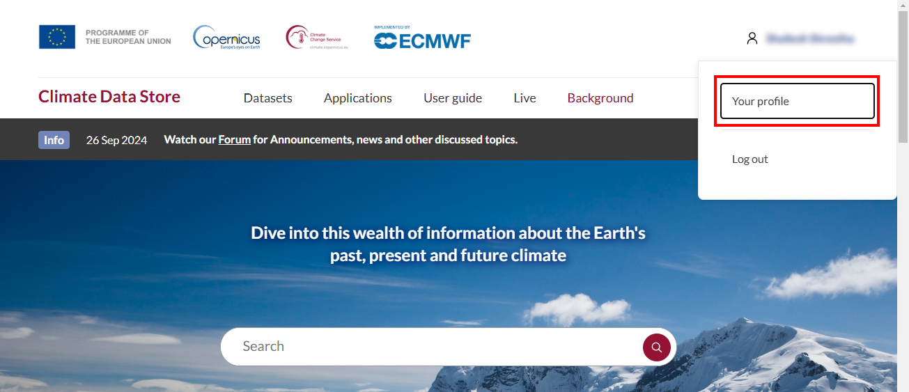

CDS API Installation and Download
Learning Objectives
We have prepared a Jupyter Notebook for you, where you only need to adjust the output folder and your API key. You can download the notebook from the following link:
Open the notebook in Jupyter Lab and follow the instructions. Alternatively, you can copy the Python code snippets into your Jupyter Notebook and execute the cells.

Setting Up the CDS API
To set up the CDS API (Application Programming Interface to download data from the CDS), you need a user account in the CDS. You can create this account directly via the Climate Data Store (CDS).
If you do not yet have a user account, create one via the homepage. In the top right corner of the window, click on “Login - Register” button. A dialog window will appear as shown below. Follow the instructions to create an ECMWF account, then log in to the CDS using your ECMWF username and password.

1. Personal API Key
After logging in, you can view your API information in your account. You will need the API key (or API token) in the next step.
Scroll down to the API Token section and click the “copy” button to copy your API key. Next, open the CDS API Installation and Download Notebook and replace the existing key at api_key = "Your Personal API Key".
Alternatively, copy the following code and replace the API key:
import cdsapi api_key = "Your Personal API Key" api_url = "https://cds.climate.copernicus.eu/api"
2. Installation of the CDS API
Now you are ready to install the CDS API. Open the command prompt (CMD) and enter the following command:
pip install cdsapi
You should now have all the necessary prerequisites to download data from the CDS. In the next step, we will test this with a sample dataset.
Downloading Climate Data from the CDS
Our sample dataset is the ERA5 reanalysis dataset. If you are already familiar with this dataset, you can skip the info box and proceed directly to the next step.
Note
The ERA5 climate dataset is a comprehensive collection of weather and climate data produced by the European Centre for Medium-Range Weather Forecasts (ECMWF). It is a historical weather and climate database based on modern computational models and satellite measurements. ERA5 provides continuous weather data from 1950 to the present. These data include temperature, humidity, wind speed, and more.
In climate research, the ERA5 dataset is used to study long-term climate trends. For example, it can be analyzed to see how temperatures have changed over decades or how the frequency of extreme weather events has evolved.
In short, the ERA5 dataset is a valuable resource for many different disciplines and fields because it provides reliable data for analyzing the global climate system. It also serves as the basis for developing climate models and weather forecasts, helping to create more accurate and realistic predictions, which are crucial for future risk management.
1. Creating the API Request
Datasets available in the CDS can quickly reach several gigabytes due to their spatial and temporal coverage. The CDS allows you to select specific variables, time periods, and regions to prevent unnecessary storage usage on your computer. For testing, we will download only a small portion of the dataset (one variable for a single day in October 2024).
To automate the download of the desired data via the CDS API, you first need to generate an API request code. To do this, go to the Copernicus Climate Data Store, log in, and search for the dataset ERA5-Land hourly data from 1950 to present.
Go to the Download tab and select the parameters as follows:
Temperature: 2m temperature
Year:2024
Month: October
Day: 01
Time: Select all
You can define your preferred region in the “Geographical Area” section. This step is essential to avoid downloading data for the entire available area.
We have prepared the coordinates for the region around Lake Constance, the test region for the CoKLIMAx project.

Note
You can easily generate your own custom coordinates using our Bbox-Generator. Copy the coordinates to your clipboard or save them in a text document. You can also enter them directly into the Jupyter Notebook later. Alternatively, update the bounding box value in "area": [48.7, 7, 47.1, 11] to define the data extent, refer to Sub-region Bounding Box.
For the additional parameters (data format and compression), set the fields in the input form as shown in the following image.

Once you have accepted the terms of use, simply click “Show API request code” and the automatically generated API request code will appear. For our test data, it looks as follows:
# Define dataset and request parameters dataset = "reanalysis-era5-land" request = { "variable": ["2m_temperature"], "year": "2024", "month": "10", "day": ["01"], "time": [ "00:00", "01:00", "02:00", "03:00", "04:00", "05:00", "06:00", "07:00", "08:00", "09:00", "10:00", "11:00", "12:00", "13:00", "14:00", "15:00", "16:00", "17:00", "18:00", "19:00", "20:00", "21:00", "22:00", "23:00" ], "data_format": "netcdf", "download_format": "zip", "area": [48.7, 7, 47.1, 11] }client = cdsapi.Client() # Define download folder download_folder = os.path.join(os.getcwd(), "CDSdata") os.makedirs(download_folder, exist_ok=True) # Create the directory if it doesn't exist # Define download file path download_filepath = os.path.join(download_folder, f"{dataset}.zip") # Download the dataset client.retrieve(dataset, request, download_filepath)
2. The API Request in Jupyter Notebook
Open Jupyter Lab via the command prompt (cmd) and run the codes above to download your first dataset.
jupyter lab
If Jupyter Lab does not open, please review the instructions we have prepared for you here.